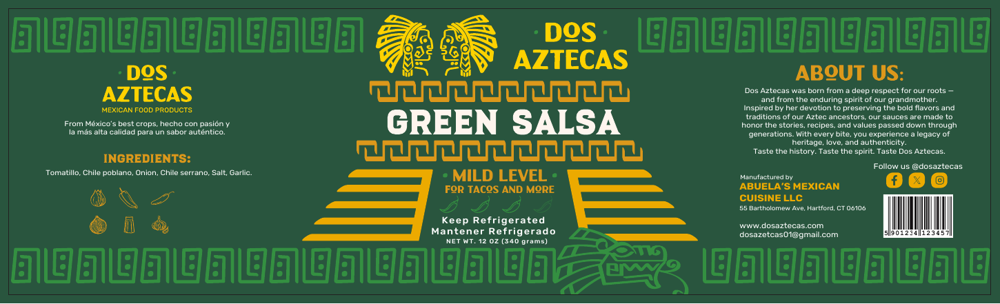
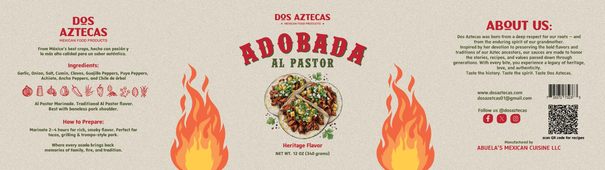
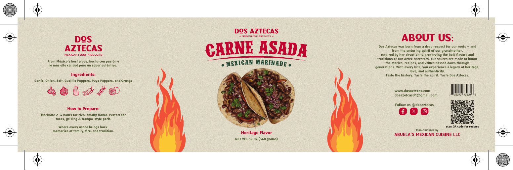
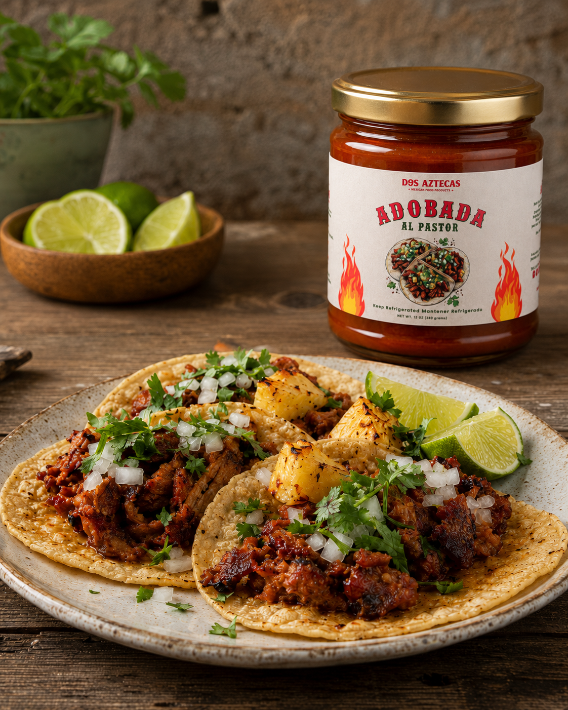

Green Salsa
Tomatillo, poblano, serrano, and garlic create a bright, balanced salsa for tacos and more.
Mexican food products
Bold sauces and marinades inspired by family tradition, created to bring the fire, color, and soul of México to every table.

AUTHENTIC FLAVOR · FAMILY TRADITION
Meet the founder
Born in Puebla and growing in Connecticut, Dos Aztecas is more than a food brand. It is a commitment to preserve the flavors we grew up with and share them personally—one sample, one family, and one table at a time.
“I want every person who tastes Dos Aztecas to feel the care, history, and pride behind the recipe.”Follow our journey ↗
Meet the family
From bright tomatillo salsa to smoky marinades, each product is designed to turn everyday meals into something worth gathering around.

Tomatillo, poblano, serrano, and garlic create a bright, balanced salsa for tacos and more.

A savory blend of guajillo, puya, garlic, onion, and orange made for the grill.

Deep chile flavor, warm spices, and achiote inspired by the unforgettable taste of al pastor.
From our kitchen
Signature recipes built around bold flavor, family-style cooking, and the products at the heart of Dos Aztecas.
A street-food classic
Marinated pork, warm tortillas, pineapple, onion, and cilantro brought together with bold adobada flavor.
Golden and crisp
Crispy rolled tacos finished with lettuce, crema, queso fresco, and a generous spoonful of green salsa.
A comforting favorite
Crisp tortilla chips coated in salsa and layered with crema, queso fresco, onion, cilantro, and egg.
From Puebla to your table
Our story crosses borders, but its heart remains the same: family, perseverance, and food made with meaning.
For retailers and partners
We are growing with select grocers, specialty markets, restaurants, and community partners.
Start a wholesale conversation